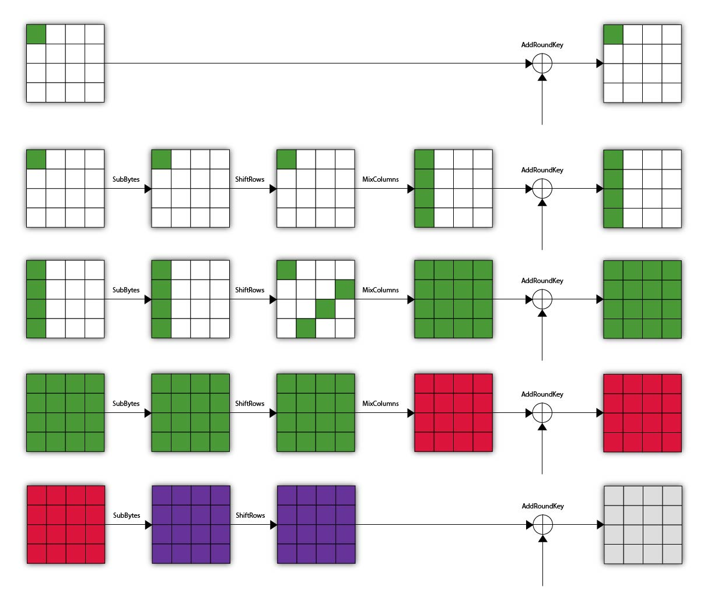

Remember what happened to our Λ-set after we've reached the end of 3 rounds
We do not have a Λ-set anymore, but we know that we still have some kind of special structure. If we XOR the bytes of one index from the states of our Λ-set, they will sum up to \( 0 \).
Now what would happen if we added another round on top of that? The next SubBytes transformation destroys our observations. After this, we're in the unknown.
You might already have guessed what "good" this unkonwn brings for our cryptanalysis. And this is a theme that we will keep running into in different sorts of cryptanalysis. This unknown allows us to make a guess on the last round key and verify the guess.
Imagine that you make a guess for the first byte of the last round key. You can now reverse the value of the state, from each of your ciphertext (which you know, this is a chosen-plaintext attack) up until the state where we know our observations hold.
At this point, it's enough to XOR all of the reversed bytes at the state right before the last SubBytes to check if they XOR out to \( 0 \). If they do, you might really well have guessed the right byte for the last round key.
The point is then to find the value of the last round key byte-by-byte.
Now it's your turn!
setup() function should now use this 4-round AES.reverseState() that takes a key guess of one byte, the position of that key guess and the encrypted Λ-set returned by the setup() function. It should then reverse the byte at that position on every element of the Λ-set, up until the beginning of the last round. It should then return this set of reversed bytes.checkKeyGuess() that takes the key guess of one byte and the set of byte values returned by the reverseState() function. The function should try to XOR all the given bytes and check if the result equals \(0\). If it is, you might have found a key! Display the byte guessed. Otherwise do nothing.At this point, make sure that things work. You should test reverseState and checkKeyGuess. Use:
setup()If checkKeyGuess() finds out that the XOR is indeed \(0\), you're good. Otherwise meditate for 5 minutes and correct your code.
You now have enough functions to code your general attack.
What you will do, to find out one byte of the last round key, is to loop through all the 256 possible values of that byte and feed them to your freshly created functions.
But because an invalid guessed key byte might sometimes gives you a false positive, you will want to test all of them before taking a conclusion.
For this, you will have to modify your checkKeyGuess() function to keep track of what guess seem valid or not.
setup() function for that: it is supposed to generate a random Λ-set at every call. Do this until only one guess remains in your list.Make sure to test the values you obtain. The next section will show you how to obtain the main secret key from this last round key.